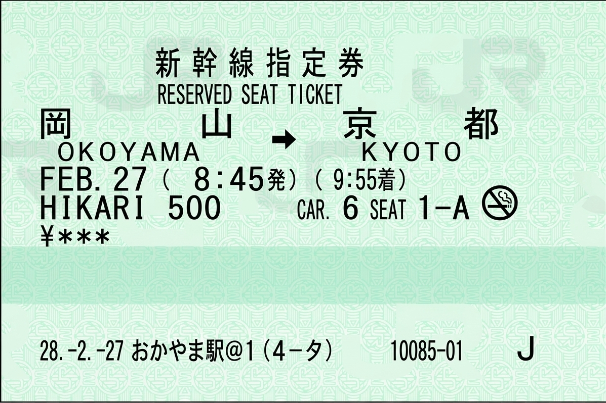
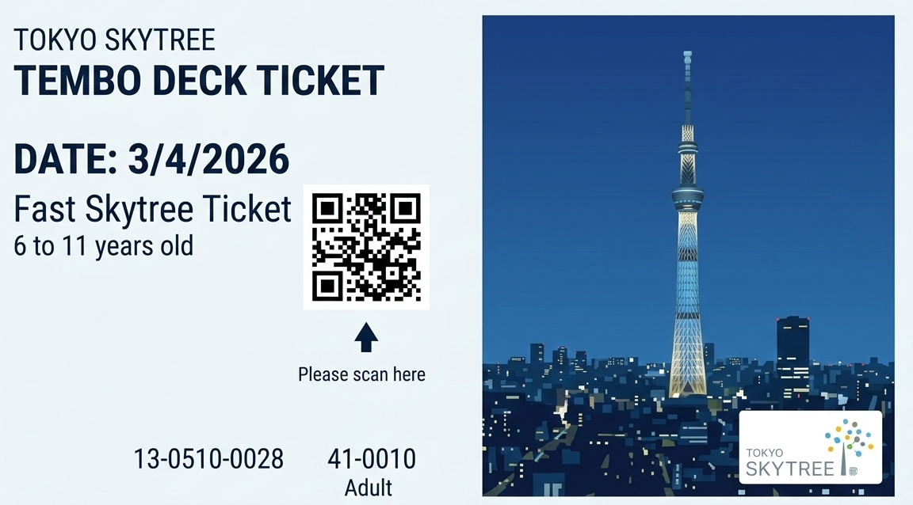

EWR - HND
Hold to view • Release to close

Shinkansen
Hold to view • Release to close

Tokyo Skytree
Hold to view • Release to close

Sanrio Pasmo Transit Pass
Hold to view • Release to close

Chichu Art Museum
Hold to view • Release to close